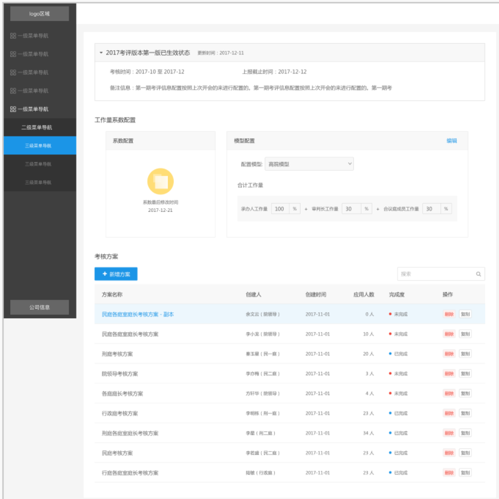
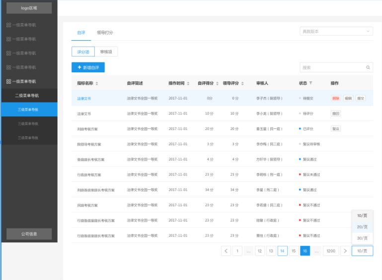
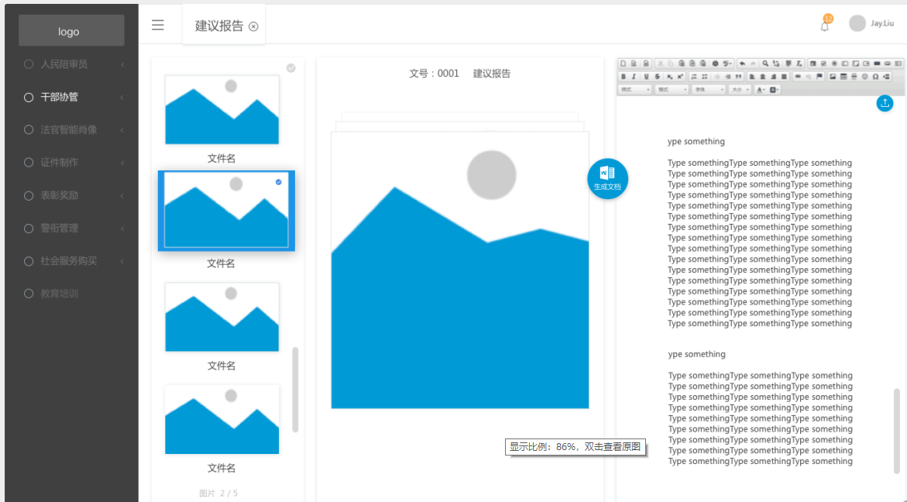
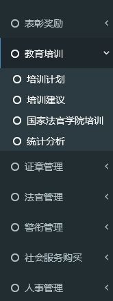
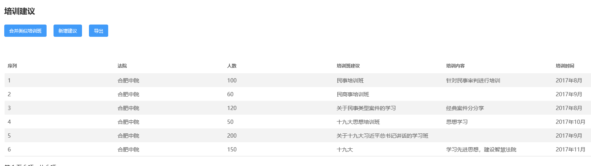
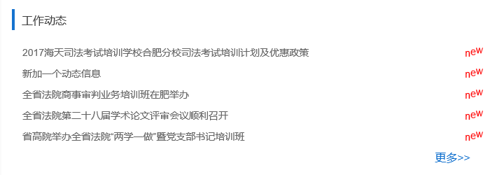
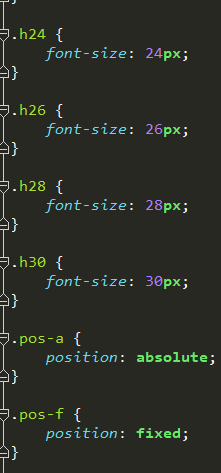
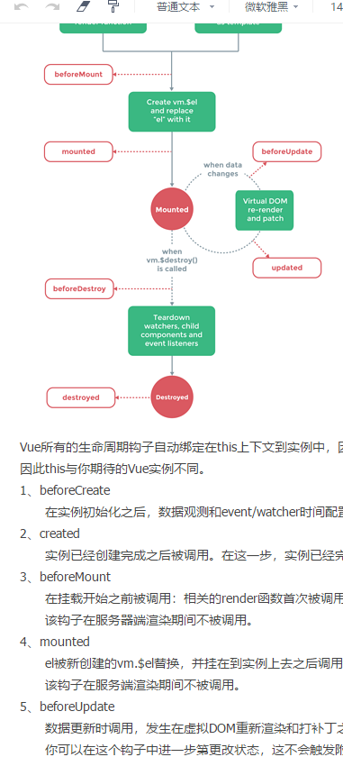
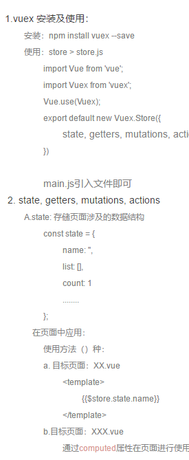
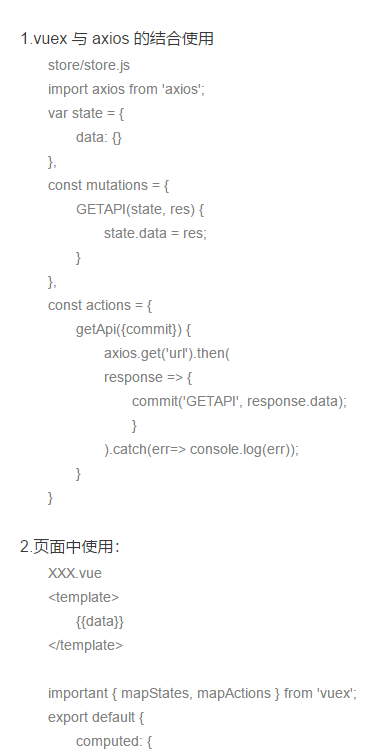

转正述职报告
作者:闻紫阳
时间:2017年12月
时间:2017年12月
综述
- 1.个人简介
- 2.岗位职责
- 2.工作内容
- 3.工作体会
- 4.工作总结
- 5.未来规划
个人简介：
- 姓名：闻紫阳
- 学历：本科
- 专业：软件工程
- 学校：合肥师范学院
- 来自：阜阳
- 工作经历：2015年6月--2017年7月，工作于安徽网新科技有限公司
- 2017年9月--至今，工作于安徽富驰信息技术有限公司
- 工作内容：
岗位职责：
- 1.根据设计师的UI效果图，实现图片到网页的页面转化，并设计出合理的页面架构。
- 2.根据产品经理提供的业务信息以及后端人员提供的接口实现对应的数据展现以及交互实现。
- 3.兼容浏览器差异性。
- 4.同产品经理、设计师以及后端人员保持良好的沟通。
- 5.完成自测试和缺陷修改。
工作内容：
- 职位：前端开发工程师
- 负责项目：KPI、政工
- KPI：版本详情页（100%）、在线考核模块（100%）
- 政工：OCR部分（100%），之后项目重新做（30%）（目前状态：暂停）
- 安徽法官培训平台: 首页的修改（100%）
- 其他：智能辅助决策系统首页、页面规范部分制作
1.智能考核分析平台（KPI）
版本详情页
3个页面
上级条目页面的单条信息的下钻页面
页面特点是上中下流式结构

在线考核模块
3种角色，共9个页签，48个页面 此模块是根据用户角色不同展示出不同的页面，而每个页面的产生也是通过页签控制来进行切换。

2.政工平台（PW）
OCR页面
上级选中条目的下钻页面

政工近期的栏目页面
7个主栏目，21个子栏目
PW栏目页：
PW具体页面：
3.安徽法官培训平台
首页重构
PX首页部分：
4.其他
智能辅助决策系统首页：
页面规范制作：
根据UI给出的设计规范制作对应的前端的样式，以及之后在Vue 项目中使用的elementUI 的部分样式的修改。
页面规范部分样式：
工作体会：
- 1.团队成员之间的良好沟通，能够提升工作效率。
- 2.自我的认识：作为一个前端，能够保证页面的还原度以及页面质量的输出，同时需要加强业务梳理能力以及逻辑代码的美观度以及可维护性。
- 3.保持一个积极向上的心理状态。
工作总结：
- 1.在与团队成员沟通过程中，凝练自己的语言，能够及时的反馈准确的信息给他人。
- 2.在工作中及时总结自己在项目制作过程中的问题，解决方案，寻找更优的解决方式。
- 3.a.事情起步之前，应该总体把握自己开发部分的前后关联性，梳理自己的流程思路，
b.其后是设计自己代码结构，及时优化，
c.合理划分自己的时间，做到更好的提高效率。
未来规划：
- 技术栈：vue + vuex + axios + node

ON THE WAY
- vue + vuex + axios
ON THE WAY--vue
- 
ON THE WAY--vuex
- 
ON THE WAY--axios
- 
ON THE WAY
之前尝试，自己构建一个小型的音乐App基于Vue全家桶，目前状态是网页结构以及根据api，
通过axios 的抓取数据已经实现。
通过axios 的抓取数据已经实现。
这段时间，解决自己项目的同时，在尝试搭建一个PC 端的网站后台系统。目前已经完成路由部分。
NEXT：NODE
- 目前也仅限于API的了解。还在继续进行中
Thank you !
Enjoy your life!